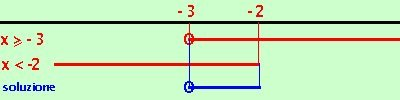
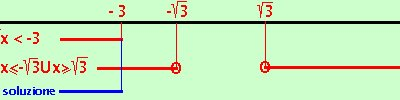

Esercizio
Risolvere la disequazione
|
 |
 |
| x + 3 < |
x2 - 3 |
Debbo risovere i due sistemi
 |
x + 3  0 0
(x + 3)2 < x2 - 3
|
|
|
x + 3 < 0
x2 - 3 0
|
- risolviamo il primo
x + 3 0
(x + 3)2 < x2 - 3
sviluppiamo la seconda equazione e dopo alcuni calcoli otteniamo:
x + 3 0
x < - 2
la prima
x + 3 0 e' verificata per
x -3
la seconda e' verificata per
x  -2 -2

Riporto su un grafico, evidenziando con una linea marcata i valori che risolvono le disequazioni, i valori dove e' accettabile l'uguale li indico con un cerchietto. Essendo un sistema prendo le soluzioni comuni
Abbiamo come soluzione
-3 x < -2
-
risolviamo il secondo
x + 3 < 0
x2 - 3 0
la prima
x + 3 < 0 e' verificata per
x < -3
la seconda x2 - 3 0 e' verificata per
x - 3 U
x 3
calcoli 3 U
x 3
calcoli

Riporto su un grafico, evidenziando con una linea marcata i valori che risolvono le disequazioni, i valori dove e' accettabile l'uguale li indico con un cerchietto.
Abbiamo come soluzione
x < -3
Adesso devo "cucire" le soluzioni dei due sistemi ed ottengo il risultato finale: le soluzioni della disequazione iniziale sono
x < -2
|